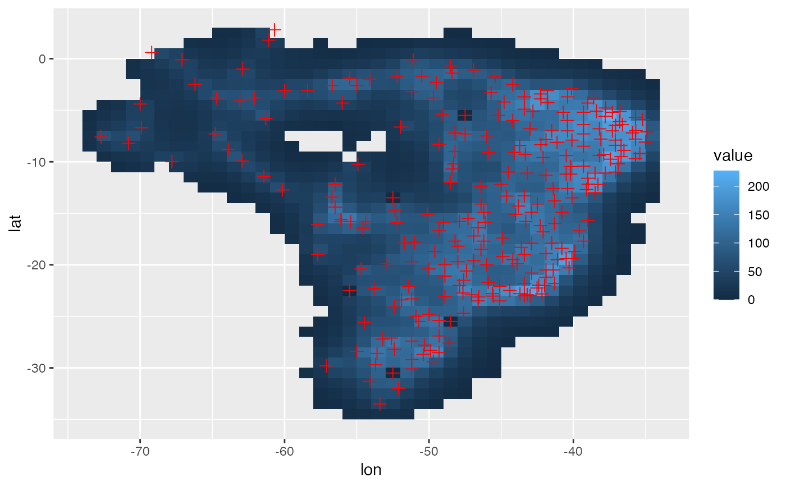

weight_adw.RdThe irregularly-spaced data are interpolated onto regular latitude-longitude grids by weighting each station according to its distance and angle from the center of a search radius.
weight_adw(
points,
range,
res = 0.5,
cdd = 450,
m = 4,
nstation.max = 8,
nstation.min = 3,
.progress = "text",
...
)
weight_adw_sf(
points,
range = NULL,
res = 0.25,
cdd = 450,
m = 4,
nstation.max = 8,
nstation.min = 3,
.progress = "text",
...
)A matrix (N,2) with longitude and latitude of points of data observed
`[xmin, xmax, ymin, ymax]`
the grid resolution
the correlation decay distance (km), default (450)
distance weight (default 4)
other parameters to [plyr::ldply]
Number of stations used per point for interpolation. The default is 8.
A data.frame with longitude, latitude and interpoled points
1. Xavier, A. C., King, C. W., & Scanlon, B. R. (2016). Daily gridded meteorological variables in Brazil (1980–2013). International Journal of Climatology, 36(6), 2644–2659. <doi:10.1002/joc.4518>
library(ggplot2)
data(TempBrazil) # Temperature for some poins of Brazil
loc <- TempBrazil[, 1:2] %>% set_names(c("lon", "lat"))
dat <- TempBrazil[, 3] %>% as.matrix() # Vector with observations in points
range <- c(-78, -34, -36, 5)
# weight <- weight_adw(loc, range = range, res = 1)
r = spInterp_adw(loc, dat, range, res = 1)
#>
|
| | 0%
|
| | 1%
|
|= | 1%
|
|= | 2%
|
|== | 2%
|
|== | 3%
|
|== | 4%
|
|=== | 4%
|
|=== | 5%
|
|==== | 5%
|
|==== | 6%
|
|===== | 6%
|
|===== | 7%
|
|===== | 8%
|
|====== | 8%
|
|====== | 9%
|
|======= | 9%
|
|======= | 10%
|
|======= | 11%
|
|======== | 11%
|
|======== | 12%
|
|========= | 12%
|
|========= | 13%
|
|========= | 14%
|
|========== | 14%
|
|========== | 15%
|
|=========== | 15%
|
|=========== | 16%
|
|============ | 16%
|
|============ | 17%
|
|============ | 18%
|
|============= | 18%
|
|============= | 19%
|
|============== | 19%
|
|============== | 20%
|
|============== | 21%
|
|=============== | 21%
|
|=============== | 22%
|
|================ | 22%
|
|================ | 23%
|
|================ | 24%
|
|================= | 24%
|
|================= | 25%
|
|================== | 25%
|
|================== | 26%
|
|=================== | 26%
|
|=================== | 27%
|
|=================== | 28%
|
|==================== | 28%
|
|==================== | 29%
|
|===================== | 29%
|
|===================== | 30%
|
|===================== | 31%
|
|====================== | 31%
|
|====================== | 32%
|
|======================= | 32%
|
|======================= | 33%
|
|======================= | 34%
|
|======================== | 34%
|
|======================== | 35%
|
|========================= | 35%
|
|========================= | 36%
|
|========================== | 36%
|
|========================== | 37%
|
|========================== | 38%
|
|=========================== | 38%
|
|=========================== | 39%
|
|============================ | 39%
|
|============================ | 40%
|
|============================ | 41%
|
|============================= | 41%
|
|============================= | 42%
|
|============================== | 42%
|
|============================== | 43%
|
|============================== | 44%
|
|=============================== | 44%
|
|=============================== | 45%
|
|================================ | 45%
|
|================================ | 46%
|
|================================= | 46%
|
|================================= | 47%
|
|================================= | 48%
|
|================================== | 48%
|
|================================== | 49%
|
|=================================== | 49%
|
|=================================== | 50%
|
|=================================== | 51%
|
|==================================== | 51%
|
|==================================== | 52%
|
|===================================== | 52%
|
|===================================== | 53%
|
|===================================== | 54%
|
|====================================== | 54%
|
|====================================== | 55%
|
|======================================= | 55%
|
|======================================= | 56%
|
|======================================== | 56%
|
|======================================== | 57%
|
|======================================== | 58%
|
|========================================= | 58%
|
|========================================= | 59%
|
|========================================== | 59%
|
|========================================== | 60%
|
|========================================== | 61%
|
|=========================================== | 61%
|
|=========================================== | 62%
|
|============================================ | 62%
|
|============================================ | 63%
|
|============================================ | 64%
|
|============================================= | 64%
|
|============================================= | 65%
|
|============================================== | 65%
|
|============================================== | 66%
|
|=============================================== | 66%
|
|=============================================== | 67%
|
|=============================================== | 68%
|
|================================================ | 68%
|
|================================================ | 69%
|
|================================================= | 69%
|
|================================================= | 70%
|
|================================================= | 71%
|
|================================================== | 71%
|
|================================================== | 72%
|
|=================================================== | 72%
|
|=================================================== | 73%
|
|=================================================== | 74%
|
|==================================================== | 74%
|
|==================================================== | 75%
|
|===================================================== | 75%
|
|===================================================== | 76%
|
|====================================================== | 76%
|
|====================================================== | 77%
|
|====================================================== | 78%
|
|======================================================= | 78%
|
|======================================================= | 79%
|
|======================================================== | 79%
|
|======================================================== | 80%
|
|======================================================== | 81%
|
|========================================================= | 81%
|
|========================================================= | 82%
|
|========================================================== | 82%
|
|========================================================== | 83%
|
|========================================================== | 84%
|
|=========================================================== | 84%
|
|=========================================================== | 85%
|
|============================================================ | 85%
|
|============================================================ | 86%
|
|============================================================= | 86%
|
|============================================================= | 87%
|
|============================================================= | 88%
|
|============================================================== | 88%
|
|============================================================== | 89%
|
|=============================================================== | 89%
|
|=============================================================== | 90%
|
|=============================================================== | 91%
|
|================================================================ | 91%
|
|================================================================ | 92%
|
|================================================================= | 92%
|
|================================================================= | 93%
|
|================================================================= | 94%
|
|================================================================== | 94%
|
|================================================================== | 95%
|
|=================================================================== | 95%
|
|=================================================================== | 96%
|
|==================================================================== | 96%
|
|==================================================================== | 97%
|
|==================================================================== | 98%
|
|===================================================================== | 98%
|
|===================================================================== | 99%
|
|======================================================================| 99%
|
|======================================================================| 100%
print(str(r))
#> List of 3
#> $ weight :Classes ‘data.table’ and 'data.frame': 6349 obs. of 4 variables:
#> ..$ lon: num [1:6349] -55.5 -55.5 -55.5 -54.5 -54.5 -54.5 -53.5 -53.5 -53.5 -52.5 ...
#> ..$ lat: num [1:6349] -34.5 -34.5 -34.5 -34.5 -34.5 -34.5 -34.5 -34.5 -34.5 -34.5 ...
#> ..$ I : int [1:6349] 220 21 213 220 213 21 220 213 21 220 ...
#> ..$ w : num [1:6349] 0.1573 0.0418 0.0246 0.2879 0.0429 ...
#> ..- attr(*, ".internal.selfref")=<externalptr>
#> $ coord :Classes ‘data.table’ and 'data.frame': 932 obs. of 2 variables:
#> ..$ lon: num [1:932] -73.5 -73.5 -73.5 -73.5 -72.5 -72.5 -72.5 -72.5 -72.5 -72.5 ...
#> ..$ lat: num [1:932] -8.5 -7.5 -6.5 -5.5 -9.5 -8.5 -7.5 -6.5 -5.5 -4.5 ...
#> ..- attr(*, ".internal.selfref")=<externalptr>
#> ..- attr(*, "sorted")= chr [1:2] "lon" "lat"
#> $ predicted: num [1:932, 1] 12.03 13.96 9.91 6.66 10.52 ...
#> ..- attr(*, "dimnames")=List of 2
#> .. ..$ : NULL
#> .. ..$ : chr "1"
#> NULL
df = r %$% cbind(coord, value = predicted[, 1])
ggplot(df, aes(lon, lat)) +
geom_raster(aes(fill = value)) +
geom_point(data = loc, size = 2.5, shape = 3, color = "red")

set.seed(2)
dd <- data.frame(
lon = runif(100, min = 110, max = 117),
lat = runif(100, min = 31, max = 37),
value = runif(100, min = -10, max = 10)
)
head(dd)
#> lon lat value
#> 1 111.2942 32.20561 7.173832
#> 2 114.9166 33.56583 2.903207
#> 3 114.0133 36.88360 2.055973
#> 4 111.1764 35.97353 9.439614
#> 5 116.6069 32.72184 -2.466855
#> 6 116.6043 34.57550 6.382290
dg <- adw(dd, gridSize = 1, cdd = 1e5)
#> Error in adw(dd, gridSize = 1, cdd = 1e+05): could not find function "adw"
# dg is the dataframe of grid (mesh)
head(dg)
#> Error in head(dg): object 'dg' not found